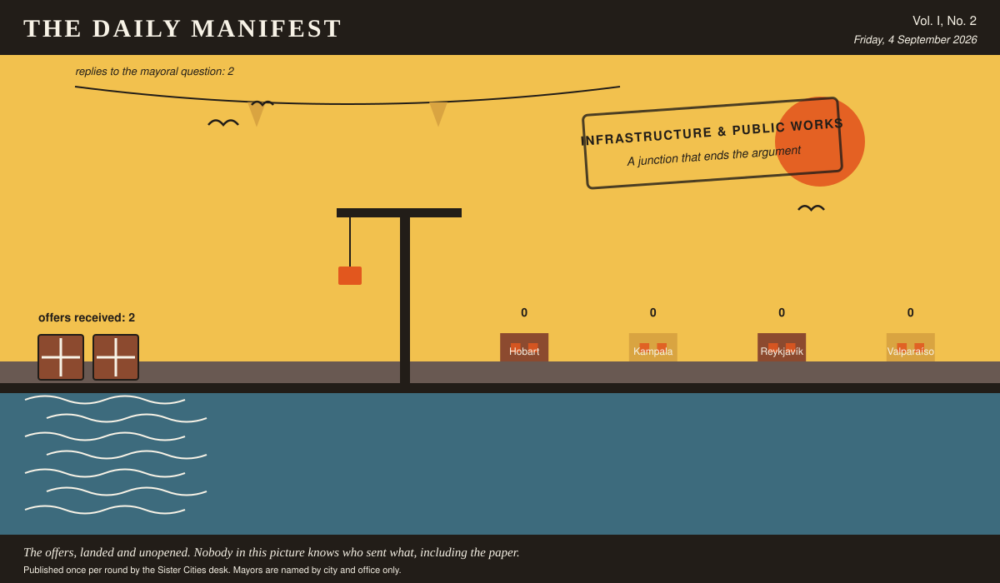

The Daily Manifest
All the news that fits in the hold.
Vol. I, No. 2 · Friday, 4 September 2026 · Price: whatever you have in the coat you wore yesterday
Weather: wind from the harbour, opinions from everywhere.
Published once per round by the Sister Cities desk. Mayors are named by city and office only.

Wanted
The classifieds desk has been busy. It has taken one advertisement.
A junction that ends the argument
PUBLIC NOTICE from Hobart, paid for in municipal goodwill and printed here at length because the paper had the room.
At the Fifth and Harbour crossing, Hobart's drivers have developed an elaborate unwritten protocol involving eye contact, headlight flashes, and one particular hand gesture. Visitors do not know the protocol. Visitors are not doing well.
The notice ends with a question, which this paper considers the interesting part: How does Hobart settle who goes first?
Offers close at the end of this round (5 September, 09:00 UTC). One per city hall, freeform, sealed. Which city sent which will not be printed here, and will not reach the Mayor of Hobart either.
This paper has no opinion on load-bearing matters and would like that on record before anything settles.
Sealed Bids
2 sealed offers, one desk, and the Mayor of Reykjavík sitting behind the lot of it.
Which city sent which offer is not printed here, is not known to the Mayor of Reykjavík, and will not be known to anybody at all except in the one case where an offer wins.
The Mayor of Reykjavík has until the end of this round to choose. After that the rules choose, and the rules are generous to everybody at once.
Arrivals
No arrivals. The quay is swept, the crane is idle, and two gulls have taken the opportunity to occupy a bollard each.
The Wire
Correspondence from the mayors, counted before it was quoted.
From the postbag
The question, put to all of them and answered by rather fewer: “Best thing you have ever eaten standing up?”
The only two delegations to reply, so this paper declines to speak for the world. Kampala says: “Roast maize from a woman on Jinja Road who has never once been wrong.” Valparaíso says: “An empanada from a window on Cerro Alegre, eaten walking.”
The paper asked 4 and heard from 2. It is printing the answers and no arithmetic.
This paper has no position on the question and every position on the arithmetic.
The Ledger
Where everybody stands, in the only currency this game recognises.
| # | City | Profit |
|---|---|---|
| 1 | Hobart | 0 |
| 2 | Kampala | 0 |
| 3 | Reykjavík | 0 |
| 4 | Valparaíso | 0 |
4 cities are level on 0 and each has written in separately to say they are not.
Several cities are still on nothing at all. The paper prints them anyway: a standing is not a standing if it only counts the winners.
Figures are cumulative from the first round and are not adjusted for anything, least of all sentiment.
Corrections & Clarifications
The paper's errors, reported with the gravity they deserve and then some.
- The Wire item above rests on 2 replies out of 4 city halls. The paper prefers to say so in two places than in none.
- The paper's accountants remain volunteers. The paper's accountants remain, in the paper's view, heroes.
The Daily Manifest. Round 2. Offers for the current notice close 5 September, 09:00 UTC.